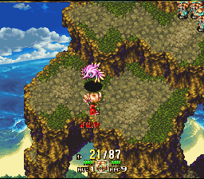
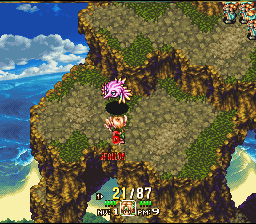

| 1. | Principal |
| 2. | Cajas y Manuales SNES |
| 3. | Proyectos |
| 4. | Documentación |
| 5. | Utilidades |
| 6. | Enlaces |
30/12/2016: ¡¡FELIZ AÑO 2017 A TODOS!!
Madre mía, otro año que se nos va... Ya hace más de 16 años que abrí esta "web" y aquí seguimos al pie del cañón todavía, y espero que por muchos años más. Aprovecho esta entrada para felicitaros a todos las fiestas y desearos que tengáis un muy feliz año 2017 en el que vuestros sueños y metas se hagan realidad.
Y hasta que eso ocurra, os dejo unas capturas de pantalla de cómo han quedado los menús del Star Ocean.


18/09/2016: SI NO ACTUALIZO, ME CANEAN...
Muchas novedades hay últimamente, pero tengo muy poco tiempo para actualizar, así que las dejo rápidamente:
* Star Ocean: ya está todo el texto en español traducido e insertado y cabe perfectamente, lo cual es un éxito. Ahora mismo he extraído los objetos tanto en inglés como en japonés y hay que traducirlos e insertarlos adecuadamente, que es la parte más complicada. Normalmente todo lo relacionado con los menús es la parte más complicada de un juego.
* Super Mario RPG: mi amigo josete2k ha actualizado lo que parece ser su versión definitiva del parche en castellano (por ahora XD) y lo tenéis ya subido en la sección correspondiente.
* Earthbound: ésta es otra de las sorpresas de josete2k, y una muy buena, ya que este juego era uno de los pocos grandes RPGs de SNES que quedaban por traducir al castellano; de momento no tengo sección para ella, pero la haré en cuanto tenga algo de tiempo libre. De momento podéis bajar el parche desde aquí: Earthbound español versión 0.9b
21/08/2016: PRIMERAS CAPTURAS DE PANTALLA
Aquí os dejo un par de capturas de pantalla de la escena inicial con el texto del juego insertado:

20/08/2016: AVANCES EN STAR OCEAN
Estas últimas semanas de relax han sido muy fructíferas en lo que al romhacking se refiere. He terminado de desarrollar la aplicación que permite comprimir e insertar el script de texto y le he añadido funcionalidades que se irán ampliando conforme avance en la traducción; de momento la rutina hace:
* Comprime el texto con mi algoritmo LZH y lo inserta en el espacio libre
* Re-comprime bloques de datos de la ROM (que llevan la información de eventos) y obtiene 3Kbytes de espacio libre extra
* Añade la fuente 16x16 y la anchura de cada letra
* Busca los espacios libres en ROM más óptimos para meter los cambios
* Compila en ensamblador el código con las modificaciones para la versión traducida y lo inserta
Y me queda por hacer algunas ampliaciones en la utilidad:
* Re-compresión de los bloques que llevan el algoritmo aritmético que implementa el S-DD1 para poder editar gráficos
* Gestionar los menús y la fuente 8x8
¡La cosa avanza! :)
03/08/2016: ¡¡NUEVO HOSTING!!
Después de casi 1 año desde que nos quedáramos sin el hospedaje que MrHeston amablemente nos había ofrecido durante tantísimo tiempo, gracias a soywiz ya tenemos todos los de la comunidad hospedaje. Lo cierto es que ha sido culpa mía la dejadez de no haber buscado una alternativa, aunque siempre he preferido dejarme guiar por gente que sabe como soywiz para hacer este tipo de cosas, ya que no estoy muy puesto con el tema de hospedajes y tecnologías web. Desde aquí aprovecho para darle las gracias por su trabajo impagable así como por todo el tiempo que MrHeston nos ofreció hospedaje gratuito y de calidad.
Lo importante es que todo este tiempo que no he actualizado no he estado parado; entre las cosas que tengo ahora mismo entre manos están:
* Una retraducción del Secret of Mana directamente desde el japonés aprovechando la versión de IOS de este mismo juego; los cambios no son muy importantes, pero he añadido algunos nombres y partes de la historia para que sean más fieles al original. Estoy terminando de jugármelo entero de nuevo para ver si hay algún descuadre de texto.
* Versión MSU-1 del Secret of Mana y Chrono Trigger; el primero ya lo tengo listo y probado con el emulador Higan; la versión del Chrono Trigger que lleva intro y videos todavía no está lista del todo.
* Macro-proyecto de ingeniería inversa al Treasure Hunter G. He aprovechado que tenía muchísimo código extraído y comentado de estos últimos 10 años que he estado con el juego y he decidido ordenarlo todo por bancos e ir extrayendo aquellas partes que no tengo. Mientras hago esto, voy etiquetando todas las rutinas, saltos condicionales y variables, con el objetivo de compilar todo el juego algún día y poder hacer todas las modificaciones que se quieran a él. He localizado las tareas de sprites, animaciones, eventos, mapas, paletas, etc., de modo que casi un 60% del juego está extraído y se puede volver a comprimir a insertar haciendo una ROM nueva. Queda por dumpear 4 bancos completos de código y el script completo.
* Traducción del Star Ocean, en la que llevo metido unos meses ya partiendo de la versión japonesa, no de la de Dejap. He creado mi propia rutina de compresión que comprime el script en inglés un 7% más que el algoritmo original de Dejap. Ahora me queda programarlo en ensamblador, meterlo en la ROM, meter la rutina de la fuente y probarlo todo.
31/03/2014: SÚPER-ACTUALIZACIÓN CON MUCHAS NOVEDADES
Hoy es un gran día para mí porque he terminado de un plumazo los dos proyectos que tenía actualmente entre manos... ¡Ya están disponibles los parches para Romancing Saga3 y Final Fantasy 6 en castellano!
Respecto al RS3, decir que ya he terminado el mini-juego de las empresas y he logrado pasarme los 2 primeros retos; hay como mínimo uno más pero ése aún no he conseguido llegar a él y no sé si el texto que sale en esa parte estará bien, pero confío con casi total seguridad que sí. He hecho infinidad de cambios en esta parte y lo único que no me gusta es que el código original es ENDIABLADAMENTE lento para mostrar texto y no lo he podido optimizar por falta de ganas. En cuanto al texto, he corregido al menos 4 cuelgues que había durante el desarrollo de la historia debido a un exceso de texto en pantalla.
Respecto al FF6, decir que ya está disponible la versión a 60Hz y que la versión a 50Hz está libre de glitches en el mapa; me costó mucho tiempo encontrarlo pero al final conseguí corregirlo. También he quitado un pequeño bug en el menú que hacía que al cambiar de personaje pulsando L/R se activara por defecto la opción "QUITAR" equipamiento.
A partir de ahora no sé qué proyecto emprenderé... tengo una colaboración pendiente con mi amigo Lukas, un proyecto hardware con mi amigo Josete2k, un proyecto con mis amigos de toda la vida, el Treasure Hunter G pendiente de hace años, muchas ganas de ver traducido al castellano StarO... ejem, muchas cosas pendientes y ya veremos por dónde empezaré. Hasta que dé nuevamente señales de vida, podéis pasaros estas dos joyazas de juegos que tenéis diversión asegurada durante horas.
06/01/2014: ¡¡¡FELIZ AÑO 2014 A TODOS!!!
Con un poquito de retraso por culpa de mis vacaciones, os deseo a todos un muy feliz año 2014 y os dejo un pequeño avance de los cambios que estoy haciendo al mini-juego de las empresas del Romancing Saga 3. Espero tenerlo pronto completo.
18/12/2013: Primera corrección gorda para el Final Fantasy 6
Pues eso, que ya hay disponible un nuevo parche para el juego que corrige el cuelgue que se producía al huir de batalla. Era todo por culpa de una maldita instrucción que estaba mal en el parche de Assassin, así que la diferencia de éste parche con el anterior son 2 cochinos bytes. En cualquier caso, muchas gracias a Xenovant por el aviso.
16/12/2013: Liberada primera beta del Final Fantasy 6 (SNES) y versión definitiva de super Mario RPG
Por fin he tenido tiempo de sobra para terminar lo que me quedaba por programar del Final Fantasy VI de SNES para dejar sincronizada la parte final del juego; además he corregido un fallo gráfico que tiene la versión USA y japonesa que hace que parte de la imagen se pierda al aparecer el texto. Lo único que ahora queda es que la gente lo juegue y me reporte si hay algún fallo gordo; yo por mi parte me pasé ya todo el juego y voy a empezar de nuevo para comprobar que todo está en su sitio.
La versión que lanzo hoy es la versión PAL de 50Hz, es decir, que cuando juguéis en vuestro emulador el juego irá a 50Hz y si forzáis a que vaya a 60Hz, quizá no funcione. Cuando vuelva a jugar a todo y la gente termine de reportar las cosas que vea, sacaré la versión definitiva a 50Hz (PAL) y a 60Hz (NTSC). Si veis algún fallo, no dudéis en comunicarlo. Para más información, id a la página del proyecto.
Por otro lado, mi buen amigo josete2k ha terminado de pulir la magnífica traducción que hizo junto a Holy del magnífico juego de rol de Mario para la SNES, Super Mario RPG. Creo, personalmente, que el acabado que han dado a la traducción es soberbio y que merece jugarlo una y otra vez hasta pasárselo 100 veces si hace falta. Tenéis el nuevo parche en la página correspondiente del proyecto.
¡¡¡FELIZ NAVIDAD A TODOS!!!
06/09/2013: Novedades sobre Final Fantasy 6 (SNES)
Yo sigo aquí dándole caña a la depuración del Final Fantasy VI para SNES y ya lo tengo casi todo depurado. Estoy llegando a la última parte donde se lucha con el jefe final del juego. Estoy bastante contento por cómo está quedando ya que estoy introduciendo poco a poco todos los bugfixes que he encontrado por internet y no parcheando la ROM, sino insertando esas correcciones al código original directamente en el código.
Sacaré en breve un parche que se basará en la versión 1.0 de la ROM USA, y cuando ésta la haya jugado más gente y tenga tiempo de sobra para volcar todo el código, sacaré un parche definitivo basado en las correcciones de la versión 1.1. Eso sí, ambas serán jugables 100% sin fallos. Ya he añadido la página del proyecto para que veáis los detalles.
13/05/2013: Actualización del parche para Super Mario RPG
Pues acabo de subir una nueva versión del parche para este juegazo (la 0.91) que corrige un cuelgue que ocurría al obtener el Carné Soprano; esta parte no es imprescindible para pasarse el juego, pero al menos ya está corregido.
Por otro lado, yo sigo avanzando con el Final Fantasy VI, del que estoy volcando todo el banco de código $C3 para obtener el control total sobre los menús del juego.
21/04/2013: ¡Obra maestra al canto!
Pues sí, amigos de lo retro, por fin nuestros amigos Holy y Josete2k han liberado una versión perfectamente jugable y con todos los textos revisados y corregidos del maravilloso Super Mario RPG y me han cedido el honor de colgar su parche en mi página. Si queréis tener todos los detalles acerca del parche ya liberado, tenéis que ir a la página del proyecto.
Por otro lado, yo sigo lento pero seguro con la traducción del Final Fantasy VI, donde ya he volcado casi todo el código ensamblador de los menús y estoy dándoles la forma visual que me parece más adecuada. Esto puede ser un trabajo largo, aunque espero tener algo listo para el verano.
23/03/2013: Una actualización menor... ¿o no?
Pues eso, que hoy parecía que no tenía mucho que actualizar pero recapitulando un poco, veo que hay un par de sorpresas que van a gustar a la gente... Lo primero es que he actualizado el parche del Secret of Mana 2 con unas pocas mejoras visuales que creo gustarán a la gente (gracias a josete2k por insistir tanto); algún fallo tipográfico, una pantalla de título mejorada y unos créditos con el texto correctamente alineado. También lleva el parche para 3 jugadores simultáneos (ojo con la parte del Barco Fantasma, que el juego se lía cuando pierdes al personaje que lleva la maldición), así que creo que este parche será el último que lance para el juego.
Por otro lado, he de anunciar un proyecto nuevo en el que me he embarcado, que pretendía que fuera "breve" y ya llevo 3 meses con él: una retraducción del magnífico Final Fantasy VI para SNES. Es un juego al que nunca le había prestado mucha atención porque cuando lo jugué hace años me pareció que tenía un inglés muy complicado (demasiado slang) y la traducción al español es muy meritoria pero todo el slang está mal traducido. Seguro que ahora mismo Pablito's me pegaría 1000 vueltas si hiciera él mismo de nuevo la traducción, pero creo que con mi mejorado nivel de inglés, todas las expresiones han sido correctamente traducidas al castellano. Podría decir que aproximadamente el 80% del script ha vuelto a traducirse al castellano para que suene mejor, para corregir cosas que antes se explicaban justo al revés y con mucho más texto para que se pueda poner lo que se quiera en cada ventana de texto... ¡¡Y TODO ESTO SIN EXPANDIR LA ROM!! Para ello he utilizado un sistema DTE/MTE que reduce enormemente el tamaño del texto. Además, he cambiado la fuente (y expandido), he cambiado acentos y estoy ahora mismo re-estructurando los menús. Además, también he cambiado el texto "MISS" que aparece en los combates. Aquí tenéis unas imágenes y pronto pondré una página para el proyecto:


Y para lo último he dejado lo mejor...¿A alguien le suena estas capturas de pantalla?


[RC1].010.png)
[RC1].009.png)
[RC1].007.png)
[b2]003.png)


¡Pues sí, señores! Alguien por fin se ha dignado a hacer una traducción al castellano del magnífico Super Mario RPG de SNES, un juego al que siempre he tenido ganas de jugar y nunca lo hice por falta de tiempo... Y ahora, los amigos holy y josete2k de EOL se han puesto manos a la obra y han conseguido una AUTÉNTICA MARAVILLA de traducción. Yo se supone que ayudo con el betatesting, pero con todas las cosas que he tenido pendientes últimamente, me ha sido posible colaborar todo lo que quisiera. Sin embargo, cuando ellos den su permiso, aquí colgaremos debidamente el parche para que todos lo podáis disfrutar.
5/01/2013: ¡¡¡FELIZ AÑO NUEVO Y FELIZ DÍA DE REYES!!!
He estado retrasando el día para actualizar porque la vida real no me ha dejado demasiado tiempo para terminar de programar la pantalla del mini-juego de compra-venta de empresas, pero puesto que este mini-juego es opcional y encima un coñazo porque te impide hacer otras misiones si lo aceptas demasiado pronto durante la aventura, pues he decidido que hoy es un buen día para lanzar el parche en su versión CASI definitiva. En principio, gracias a la enorme labor de los beta-testers que han colaborado en la depuración del juego, ya no debe de haber ningún error en el texto ni ningún cuelgue, por lo que tendría que ser totalmente jugable de principio a fin.
¿A qué esperáis a ir a la página del proyecto y descargaros el parche?
Además hay una sorpresa extra porque los Reyes Magos se han portado muy bien conmigo este año: el parche para tres jugadores para el Secret of Mana 2 ya ha sido aplicado a mi traducción y podéis bajar el nuevo parche con algunas correcciones menores de texto y con la opción de tres jugadores de la página del proyecto correspondiente.
15/10/2012: Terminando Romancing Saga 3
Hace ya dos meses desde mi última actualización y la verdad es que hay mucho que contar:
* En primer lugar, los beta-testers están haciendo un gran trabajo para terminar de encontrar errores en el texto que puedan quedar, ya que parece que todos los bugs que producían cuelgues han sido solucionados.
* En segundo lugar, ya he conseguido pasarme el juego por completo y he llegado al final, por lo que también he podido traducir los textos de los créditos, que no estaban tan siquiera en la versión inglesa. Aquí podéis ver unas imágenes:


* En tercer lugar, tras anunciar la traducción en foros internacionales, parece que hay gente interesada en traducir el juego al francés, portugués, alemán... ¡incluso de nuevo al inglés! Esto último es muy interesante porque un chico se ofreció a traducir al inglés todo el script desde el japonés desde cero, lo cuál podría ayudar a sacar incluso más matices a algunos diálogos que tradujo mi amigo japonés. Además, la versión alemana ya se ha empezado a traducir, lo cual también es muy interesante.
Como veréis, he actualizado la página del proyecto con los avances, pero para quién esté impaciente por saber cuándo saldrá el parche, os responderé a la pregunta: ¡¡MUY PRONTO, ANTES DE QUE ACABE EL AÑO SEGURO!!
16/08/2012: Se terminaron mis vacaciones... y España otra vez Campeona de Europa de fútbol...
Después de dos meses de duro esfuerzo y de mucho tiempo libre consumido en programar más menús para el Romancing Saga 3, por fin he podido terminar de construir los menús para la selección del personaje principal, punto clave para poder jugar partidas con la versión en desarrollo. Ahora las pantallas de selección tienen este aspecto tan bonito:


También he terminado el sub-menú de "Objetos" y la pantalla de "Almacén", y espero que no me lleve más de una semana terminar las pantallas de compra de items y de magias. Después de esto me quedará algún menú secundario que programar pero ya se podrá jugar de forma normal al juego y entraré en la fase alfa de depuración. Y es que ya llevo más de 10.000 líneas de código ensamblador solo para los menús y empiezo a tener ganas de que el parche sea jugable.......
10/06/2012: ¡Comienza la Eurocopa 2012!
Pues sí, he elegido un buen día para actualizar, justo cuando acaba de jugar España su primer partido de la Euro2012 de Polonia y Ucrania contra Italia... buen partido y justo resultado al final, en el que podríamos haber sacado un buen resultado si no tuviéramos ese delantero llamado Torres tan inútil, pero en fin, qué se le va a hacer... Pero el objetivo de esta actualización es mostrar unas capturas nuevas de los avances que he logrado este último mes, centrándome varias horas al día en el menú de estrategia militar del juego, que me ha dado bastante guerra; lo más difícil ha sido modificar el ancho de la ventanita azul transparente donde van las descripciones de cada formación o comando, ya que ésta se crea con H-DMA y es algo difícil de controlar. Aquí os dejo unas imágenes para que veáis el acabado final... ¡Y ahora, a por el menú de cargar/grabar partida!


10/05/2012: ¡¡¿¿Más de un año sin actualizar...??!! ¡¡¡PERO ESTO QUÉ ES!!!
Pues sí, que me propuse para el 2011 mantener la web más actualizada con los avances que fuera haciendo en el Romancing Saga 3 y resulta que está más abandonada que nunca... pero no por ello estoy inactivo ni mucho menos, más bien todo lo contrario. Llevo 6 meses trabajando a toda máquina con el código del Romancing Saga 3 que se me ha estado resistiendo bastante, sobre todo la parte de las pantallas de batallas contra enemigos. Después de completarla por fin, ya me he metido con la última parte que quería: los menús. Estos ya me esperaba que fueran complicados, pero ya me he hecho con la estructura de llamadas a cada rutina que crea cada pantalla y creo que podré re-diseñarlos a mi gusto.
He actualizado la página del proyecto con un GIF animado en el que se pueden ver algunos avances chulos, pero a parte pongo aquí algunas capturas de lo que he estado haciendo este último año. Podréis notar que el texto no dice lo mismo que en inglés porque el script ha sido traducido casi en su totalidad del japonés por un amigo mío; también veréis sutiles diferencias con respecto a la versión en inglés, por ejemplo, que los letreros "FALLO", "NOQUEO" y "CIEGO" que aparecen tras efectuar un ataque al enemigo sí están traducidos al castellano.


Éstas son las dos capturas de cómo están quedando los menús por el momento
Espero que la próxima actualización ya me permita sacar un parche jugable y que no tarde tanto como ésta :D
16/01/2011: Jugosos avances en Romancing Saga 3
Primero de todo querría felicitaros a todos el año 2011 (aunque sea con mucho retraso) y desearos a todos los mejor para este nuevo año.
Durante estas vacaciones he tenido tiempo para avanzar con la programación de Romacing Saga 3 y he conseguido insertar varias rutinas propias en el juego. Entre estas rutinas está la de descompresión LZH (Huffman con diccionario) que consigue un ratio del 66% aproximadamente, lo cual nos da la posibilidad de insertar mucho más texto en castellano para explicar mejor la historia. El correspondiente compresor está también insertado en una utilidad que me he programado en C, con lo que cual ahora editar los scripts e insertarlos es cuestión de hacer un clik.
Otra de las rutinas que he insertado es la de la intro; he conseguido añadirle una fuente de ancho variable (la misma que la del juego) y añadirle el efecto de cursiva, pero no sé cuál de las dos queda mejor:


Aún no hay nada definitivo, así que tenemos tiempo de decidir con cuál nos quedaremos :D
Mientras, os dejo un par de imágenes más de muestra para que veáis el texto real del juego ya insertado (aunque falta por terminar de revisar todos los scripts) y con el algoritmo de compresión aplicado:


Por último, deciros a todos que el proyecto de recopilación de cajas y manuales de SNES sigue adelante aunque no haya actualizado la página; tenemos un montón de material ya recopilado, aunque sólo una parte está maquetado. Ahora mismo no doy a basto con todo, así que cuando vaya teniendo tiempo iré avanzando con él.
03/12/2010: Lo prometido es deuda
Como dije hace unos días, ya tenía preparado el parche para Radical Dreamers en castellano, el parche que permite guardar partidas en el propio juego (lo cual se hace pulsando el botón "Y" del mando de control). Pues bien, ya lo he estado probando estos días y parece que funciona bien; además he aprovechado para trastear con la pantalla de introducción del nombre del personaje principal, que NO aparece en esta versión. Lo que pasa es que no me ha gustado cómo ha quedado y hasta que no la deje como me gusta no la meteré en el parche.
Por el momento, aquí tenéis el parche que funciona sobre la versión traducida de Dervour, y aquí el parche completo que se aplica sobre la versión japonesa (etiquetada como [f1] en GoodSNES) y traduce el juego al castellano con la posibilidad de guardar partidas. Si queréis saber todo lo que tenéis que saber sobre la traducción, visitad Dervour Traducciones.
30/11/2010: Avances
Como hacía ya un tiempo sin actualizar y han pasado muchas cosas en este tiempo, me he decidido a escribir estas líneas para avanzar un poco lo que nos espera en los próximos meses:
En primer lugar, nos espera mucho choteo a todos los culés después de la manita que le metió el Barça al Real Madrid ayer... ¡¡5 golazos y con una imagen penosa del Madrid!!
Luego, el proyecto de restauración de cajas y manuales de SNES va viento en popa: tengo cajas como Yoshi's Island, Street fighter Alpha, Megaman X, Dragon Ball Z y muchas más, y una enorme cantidad de manuales. En cuanto tenga tiempo, actualizo la página para que lo veáis. De hecho, los colaboradores del proyecto ya pueden disfrutar de las dos entregas del material en alta calidad que les he proporcionado.
En tercer lugar, ya tengo terminado el algoritmo de compresión LZH para Romancing Saga 3. Me ha dado algún que otro quebradero de cabeza pero finalmente parece que va a comprimir una barbaridad. Así que estoy esperando a que lleguen los scripts traducidos para insertarlos. Luego aún quedará mucho por hacer con menús y demás.
Y en cuarto y último lugar, pero no menos importante, hace un ratillo me he puesto a trastear con Radical Dreamers (segunda parte del Chrono Trigger para SNES, pero en formato aventura) y he hecho un parche para poder guardar partidas dentro del propio juego. Esa opción no funcionaba con el parche al castellano que hizo el amigo Dervour puesto que usa el Satellaview para guardar partidas, y eso no es compatible con muchos emuladores. En breve pondré el parche y, si obtengo el permiso del autor, linkaré la página del parche en castellano, que se lo debemos a él INTEGRAMENTE.
2/09/2010: Por fin campeones del mundo de fútbol..........¡¡QUE VIIIIIIIIVA ESPAÑAAAAAAAAA!!
Bueno, quería haber actualizado en el mismo momento que el balón de Iniesta atravesaba la línea de gol, pero las celebraciones, la emoción desatada y la asimilación de lo que habíamos logrado de los días siguientes hicieron que ni me acordara de la página. Pero bueno, así es, ¡¡¡somos campeones del mundo de fútbol, quién lo iba a decir!!!
Entrando ya en el tema que nos reúne en esta cutre-web, he estado este verano maquinando un sistema de compresión de texto para el Romancing Saga 3; es muy parecida a la del Seiken Densetsu 3, pero optimizada. No he encontrado tiempo aún para ponerme a programarla, pero en cuanto lo haga, colgaré unas imágenes y el esquema de compresión, que es LZH: un diccionario para comprimir todo el texto y luego se vuelve a comprimir con Huffman.
Y relacionado con todo el mundo de la SNES está mi proyecto actual, que llevo en paralelo con el romhacking... estoy intentando hacer una base de datos gráfica de las cajas de SNES que salieron en España en formato PAL, junto a los manuales que acompañaban a los juegos. Por el momento mucha gente de ElOtroLado y de Peaso está participando en el proyecto, que va creciendo día a día. La idea es la siguiente:
* tenéis un juego PAL-España con su caja y todo, pues lo escaneáis o le hacéis unas fotos (a 300 ppp de resolución) desde todos los ángulos y me las enviáis
* yo me tiro unas horas maquetando y restaurando lo que me habéis enviado para dejar la caja lo más limpia posible
* si tenéis el manual, escaneáis a 150 ppp el manual entero en castellano con las hojas abiertas (es decir, dos hojas cada vez para que sea más rápido)
* me enviáis los escaneos y yo me encargo de encuadrar las fotos y hacer el PDF del manual
* cuando aportáis algo, se os da acceso a todo el material del que disponemos en el proyecto para que lo tengáis para consultar, para imprimiros las cajas o para lo que queráis.
Para más detalles para los que queráis participar, mirad la página del proyecto.
22/03/2010: Una actualización menor...
He actualizado para subir una nueva versión del parche del Chrono Trigger que corrige el fallo gráfico que se produce en la intro cuando oscila el péndulo. Este defecto sólo se veía cuando juegas el juego en la consola real o cuando en el emulador dejas pasar toda la intro y vuelve a salir el péndulo por segunda vez.
Además os informo de que estoy trabajando en otro proyecto con mi amigo Faloppa :D
28/02/2010: ¡¡¡Hoy es un gran día para mí!!!
Joer... pues sí que pasa rápido la vida, sí... ¡¡hace ya más de 5 meses desde que actualicé la última vez!! Pero creo que he elegido el día perfecto porque hoy ¡¡HA NACIDO MI PRIMER SOBRINO!! Estoy muy contento y con unas ganas tremendas de poder ir a verlo; desde aquí mucho ánimo a la mamá que está muy cansada por el parto y a mi hermano.
Y yendo al tema que nos interesa, hoy he actualizado la página para añadir mi proyecto en marcha... es ni más ni menos que el Romancing Saga 3, un juego fabuloso, con unas historias cruzadas al más puro estilo Seiken Densetsu 3 y con un sistema de combates muy parecidos al Final Fantasy 6. Espero poder sacar tiempo para ir avanzando, aunque ya hay un par de capturas de cómo ha quedado la fuente que me metido.
Además, he actualizado el parche del Secret of Mana con una modificación que hice hace ¡¡3 años!! pero que se me había olvidado subir a la web; resulta que el juego tiene una detección software del tipo de consola sobre la que se está ejecutando, por lo que si os hacéis un cartucho con el juego o bien usáis un flashcart para jugar la traducción, sólo podréis jugarlo en las consolas PAL. Sin embargo, con este nuevo parche se puede jugar en cualquier consola (SNES PAL, SNES NTSC o Super Famicom) con la única ayuda del típico adaptador para juegos de importación.
Como guinda, en breve quizá suba algunas imágenes de los cartuchos que me hice hace tiempo caseros con mis traducciones... ¡¡qué gozada poder jugarlas en la consola real tumbado en el sofá y con la pedazo de tele que tengo!!
09/09/2009: Ya iba siendo hora de dar señales de vida...
Pues sí, muchas cosas han pasado desde que actualicé hace más de 1 año con ese título de la selección española de fútbol que tanto celebré... ¡¡por ejemplo, el triplete del Barça!! ¡¡Si es que son unas fieras!!
Y en cuanto al tema que nos ocupa, pues la verdad es que no hay demasiadas novedades, aunque sí tengo mucha ilusión de nuevo, como antaño... este tiempo alejado de este mundillo me ha venido genial para cargar pilas y ahora mismo, además, me encuentro en un gran momento personal. Así que me decidí a retomar el extractor e insertor del Treasure Hunter G... ¡¡Y TERMINÉ EL EXTRACTOR!! Sí, señoras y señores, el script está volcado, pero es un INFIERNO... y lo es porque en cada bloque de texto están mezclados comandos, texto y rutinas de código que ejecutan alguna acción asociada a ese diálogo, y claro, es casi imposible realojar todo el texto a mi antojo... al menos tengo la ventaja de que el texto está bien delimitado y las rutinas para mostrarlo son sólo 2 diferentes, con lo que podría usar algún algoritmo de compresión para evitar tener que mover el texto... pero eso de momento, por desesperación, ha pasado a segundo plano y ahora de momento estoy con otro proyecto, uno que empecé también hace mucho años.
Pasaros por aquí de vez en cuando que quizá encontréis novedades pronto :D
29/06/2008: ¡¡¡¡ESPAÑA CAMPEONA DE EUROPA DE FÚTBOL!!!
¡Increíble! ¡Inenarrable! ¡Impresionante! ¡¡¡SOMOS LA EÑE!!!
02/09/2007: ACTUALIZACIÓN DEL ESTADO DE TREASURE HUNTER G (I)
Después de mis vacaciones de verano en las que no he avanzado nada de nada el proyecto, me he puesto con ganas renovadas para darle el último empujón al extractor de scripts. La verdad es que es mucho más complicado de lo que planeé al principio, aunque prefiero que así sea para simplificar en todo lo posible el insertor. Ahora mismo, ya he conseguido obtener los punteros FINALES a cada una de las cajas de texto del juego, y estoy diseñando el formato que tendrá el script para distinguir entre los cientos de comandos que hay mezclados y distinguirlos también del texto en sí que es lo que en realidad interesa. En cuanto lo tenga, no dudéis de que pondré unas capturas del archivo de texto para que veáis cómo queda y también pasaré, desde ese momento, a actualizar el contador de porcentaje de la página del proyecto según vaya traduciendo el texto.
24/06/2007: MUCHAS COSA HAN PASADO EN ESTE TIEMPO....
...Entró la primavera y ya se fue, tuvimos en España al campeón de la Liga de fútbol más lamentable en la historia de Europa, los hijos de puta de ETA volvieron a obligarnos a seguir odiando con su ruptura manipuladora de la tregua..... Vamos, que parece que todo lo que ha pasado han sido cosas no demasiado buenas, así que vamos a intentar dar algunas buenas noticias más a nuestro mundillo (como la ruptura de la encriptación del CPS-3, que es una gran noticia y una gran obra por parte de mi amigo Andreas Naive): ¡¡por fin he terminado todo el proceso de extracción de rutinas del Treasure Hunter G!! En un arrebato de pasión esta semana, me he puesto al tema y he conseguido completar las 175 rutinas que forman el núcleo del motor del juego, que es el que se encarga de decidir qué acciones se pueden tomar en cada escena según las acciones que ya has ido ejecutando anteriormente. Ahora ya me pondré seriamente a extraer todos los scripts del juego y a intentar que este eterno proyecto vea la luz.
De momento no he actualizado nada más que la sección de enlaces para añadir algunas páginas que considero interesantes.
11/02/2007: ¡¡¡POR FIN TENEMOS NUEVO HOSPEDAJE!!!
Aunque se ha hecho de esperar y al final no hemos sido ninguno de los que creíamos que íbamos a poder comprar el servidor y el nombre de dominio, finalmente la escena hispana ha encontrado un lugar en el que alojarse. Y todo esto ha sido gracias a un santo varón que se esconde detrás del nick MrHeston (no confundir con el actor americano que apoya el uso y tenencia de armas como si fueran teléfonos móviles) y que ha partir de ahora se ha de convertir en la nueva divinidad que todos debéis adorar (junto a la Diosa Mana XD). A partir de ahora podéis acceder a mi página igualmente desde el redireccionador http://welcome.to/magno o desde la dirección directa del subdominio (que no sólo es lo recomendable sino que además, así os ahorráis tener publicidad) que es http://magno.romhackhispano.org así que ya sabéis, ¡¡a actualizar Favoritos y/o Marcadores tocan!!
Y ya centrándome en el tema "profesional", durante este tiempo he estado un poco parado con todos los proyectos, en parte por falta de ganas y tiempo y en parte porque he tenido que ir limando errores de la utilidad de inserción para el Secret of Mana 2. Ahora mismo está en manos de algunos traductores para sacar versiones en italiano, sueco y, quizá, ruso. Pero como todo en este mundillo, las cosas se empiezan con mucha ilusión y ganas pero nunca se sabe qué puede pasar a mitad... así que nadie sabe aún si algún día verán la luz estos proyectos terminados. Yo por mi parte voy a retomar ya de una vez Treasure Hunter G para darle otro empujón al recuento de rutinas que estaba haciendo y así terminar ya de una vez el extractor de scripts. Y entre medias, de todo esto, también he subido un nuevo parche del Chrono Trigger, pero esta vez no es una nueva versión ni nada por el estilo: simplemente es que la otra vez había subido el parche con la corrección del bug que comenté pero no llevaba esas correcciones tipográficas que había comentado porque ésas las tenía en otra copia de la ROM; de paso he subido unas nuevas fotos para que se vea elefecto de las mayúsculas acentuadas y los créditos del final traducidos.
23/01/2007: CORRECCIÓN DE UN BUG EN EL CHRONO TRIGGER
¡¡Pues resulta que había un bug en la última versión del parche de Chrono Trigger y yo sin darme cuenta!! Gracias a Battousai Destajador descubrí que tras cerrar ciertas ventanas del juego, se produce un horrendo parpadeo debido a una mala configuración de las transferencias H-DMA que modifiqué para introducir la fuente 8x16. Ahora ya está corregido después de un rápido vistazo y podéis disfrutar de la versión 100.8% sin errores (que he nombrado como la 100.9%).
Por otro lado, he estado trabajando intensamente este mes en adaptar mi programa de inserción para el Secret of Mana 2 y convertirla en una poderosa herramienta para la traducción y configuración de casi todos los aspectos de este fabuloso juego. Así, quizá en breve podamos disfrutar de una versión al italiano de este juego creada con mis utilidades.
31/12/2006: ¡SE NOS ACABA EL AÑO 2006 CON NOVEDADES!
Como comenté en la anterior actualización, he aquí algunas novedades, aunque no son realmente espectaculares. He actualizado los parches de Secret of Mana, Secret of Mana 2 con un compendio de correcciones tipográficas de las típicas que a uno se le escapan al escribir rápido; en ambos casos simplemente son pequeños detalles estéticos, cosa que quizá también haga en breve con Tales of Phantasia; por su parte, también hay nuevo parche del Chrono Trigger, éste sí más cargado de novedades y modificaciones que podéis leer en la página del proyecto (intentaré subir nuevas capturas de pantalla en cuanto pueda). Y ya que estoy, quería comentar que hay avances muy interesantes en el Treasure Hunter G que todavía no he hecho públicos: las rutinas están prácticamente todas aisladas y analizadas y sólo quedará hacer un extractor de textos que vaya ejecutando cada una de las rutinas del juego para ir sacando el texto por completo.
Por último, quería mostrar mi más enérgica repulsa y el más profundo de los ascos al acto vil y cobarde que esos HIJOS DE LA GRAN PUTA que se refugian bajo las siglas de E.T.A. han llevado a cabo ayer día 30 de Diciembre en Madrid. Aunque a tales seres despreciables les importará una mierda, han de saber que se llevarán a la tumba el mayor de los desprecios por mi parte y por la de TODOS los españoles normales.
¡¡VIVA ESPAÑA!!
26/12/2006: ¡¡¡FELIZ NAVIDAD A TODOS Y PRÓSPERO 2007!!!
Pues eso, que esta actualización es básicamente para desearos a todos felices fiestas y un muy buen año 2007, en que vuestros deseos e ilusiones se cumplan. También os quiero invitar a todos a entrar a mi página web desde el redireccionador para evitar posibles URLs no válidas; esta dirección de redireccionamiento hacia mi página es http://welcome.to/magno. Además, quizá en breve actualice con algunas sorpresas.
26/11/2006: OS VOY A CONTAR UN CUENTO...
Este cuento trata de una serie de gente buena y agradable que se reunía habitualmente para hablar de su hobby favorito, intercambiar conocimientos y mostrar sus logros a los demás. Este hobby tenía la particularidad, además de llenar su tiempo de ocio con algo que aportaba cultura y habilidad a sus vidas, de hacer feliz a aquella gente que no dominaba el idioma del perverso Imperio y en cambio sí el idioma de Cervantes, signo de cultura y punto de encuentro de distintas civilizaciones y pueblos. Como en todo cuento, hay un malo, y éste no va a ser una excepción, con la particularidad de que el malo malísimo de nuestra historia se hacía pasar por uno más de ellos: hacía como que participaba, decía que sabía mucho pero no aportaba nada y alejaba a la gente interesada en estos temas con malas formas; algunos sentían admiración por él, otros amistad y algunos indiferencia, pero todos tuvieron que rendirse ante la evidencia de su maldad. Este villano poseía una mansión que cedía amablemente a nuestros héroes, ajenos a los maléficos planes que el destino les deparaba: un día, y sin previo aviso, nuestro malvado protagonista cerró para siempre la mansión en un intento de dejar este cuento sin final....... ¡¡¡¡¡¡¡PERO NO!!!!!!!! La voluntad de aprender cada vez más y hacer cosas que aporten felicidad a la gente pudieron más que el odio y el rencor y consiguieron abrirse paso con más fuerza que nunca.
Y aquí estoy yo de nuevo, hospedado en mi antigua "casa" y con muchas cosas que contar, aunque con pocas ganas, la verdad :D Y tengo pocas ganas porque quiero dedicar todo el tiempo que pueda a sacar estos proyectos que llevo, que me tienen realmente fascinado. En primer lugar, ya he conseguido extraer todo el código de ejecución del motor del juego del Treasure Hunter G, de modo que ya tengo perfectamente determinado cómo se leen y almacenan los punteros al texto: como intuía al principio de todo el proceso, los punteros se organizan por escenas, de modo que en un array en ROM están los punteros a todas las escenas/pantallas/mundos, o como queráis llamarlos, que tiene el juego; con ese puntero y una variable que dice en qué escena estamos, leemos de una tabla los punteros a la escena en concreto, en la cual se ejecutan los comandos que descomprimen los gráficos, crean los mapas de VRAM, configuran los objetos accesibles, y determinan la tabla de diálogos para dicha escena. De esta tabla de diálogos se extraen todos los punteros a cada caja de texto y sólo se muestran los que indica otra variable del motor. Muy enrevesado pero muy interesante.... También he modificado algunos gráficos más del Chrono Trigger y he cambiado algunas cosillas más que ya diré en su momento. Hasta entonces, os recomendaría que pasarais por la sección de Enlaces para enteraros de las direcciones provisionales del resto de las páginas de la escena hispana. Y digo provisionales porque si todo sale bien, en unos días podríamos tener un servidor propio con nuevos contenidos y administrado EXCLUSIVAMENTE por "ese grupo de gente buena y agradable".
22/10/2006: UNAS CAPTURAS NUEVAS DE CHRONO TRIGGER
Esta mini-actualización es para mostrar unas capturas de pantalla de la pantalla inicial del Chrono Trigger y de una de las pantallas del final de Lavos, que finalmente sí he traducido. Estoy terminando de preparar una nueva versión de este parche con mayúsculas acentuadas, el script revisado (he eliminado unos 40 errores tipográficos) y los créditos de todos los finales traducidos al castellano. Son simples detalles pero esos son los que determinan la calidad de un producto. También quería poner una fuente 8x8 VWF a los menús como dije pero, a parte de ser complicado, es que el efecto final no es bueno porque se ralentiza el desplazamiento por los menús ya que el procesado de la fuente es excesivo.

Por cierto, pronto pondré algunas rutinas y código para el Chrono Trigger, que permitirá al que esté interesado en estos temas el poder ver cómo funciona el algoritmo de compresión y descompresión que usa el juego para los gráficos, con su correspondiente explicación y su código en C. Además también pondré unas rutinas interesantes que deja bien claro cómo funciona el proceso de ejecución y animación en una consola como la SNES.
24/09/2006: EN QUÉ ESTOY TRABAJANDO AHORA...
Tras este parón aparente debido a las vacaciones merecidas que me tomé, informe de qué estoy haciendo en estos instantes referente a las traducciones (¡¡que nadie se piense que me he retirado!!).
En primer lugar estoy revisando y limpiando algunos errores del remake de Secret of Mana, consistentes en algunas palabras que se me escaparon mal escritas y haciendo algún retoque más estético que otra cosa. Todo esto gracias a la inestimable ayuda como siempre de mi amigo Vegetal Gibber.
En segundo lugar, le he dado un buen repaso a Chrono Trigger para añadirle una fuente 8x16 que permita meter mayúsculas acentuadas. De paso, mientras probaba la nueva fuente, revisé el texto para ir añadiendo las mayúsculas donde hacía falta (seguro que me he dejado muchas sin poner) y arreglé algunos fallos (unos 30 ó 40, muchos más de los que yo pensaba), algunos de los cuales han sido aportados por Tsory Crystal, a la que le agradezco enormemente su aportación. Ahora mismo estoy pensando en cambiar la fuente 8x8 de los menús por una más delgadita que fuera además VWF y permitiera meter nombres más largos para las armas, equipamiento, objetos y demás. También querría cambiar el texto de uno de los finales que dice "But the world refused to change...", lo que pasa es que no me apetece mucho tener que jugar el juego para llegar allí de nuevo...
Por último, y quizá sea lo más esperado y lo más importante, ya estoy de nuevo con Treasure Hunter G. Lo retomé hace varias semanas y aún estoy meditando cómo hacer el extractor de scripts. No es nada sencillo por el hecho tan sabido de que este juego no usa punteros al texto de forma explícita, sino que se recalculan de una forma un tanto enrevesada; más o menos tengo idea de cómo se está haciendo dicho cálculo, pero esto implica analizar profundamente todas las rutinas de eventos antes de cada caja de texto y algunas son realmente complicadas. Eso sí, lo que me he dado cuenta al meterme más adentro en los entresijos del código es que este juego fue programado originalmente en C con toda seguridad; con algunos juegos tenía mis dudas si usan algunas rutinas en ensamblador y el motor del juego en algún lenguaje de más alto nivel, pero con éste no: el código ensamblador generado es evidente que procede de un lenguaje de más alto nivel, porque es casi imposible mantener tantísimas estructuras de memoria globales para hacer un juego directamente en ensamblador.
¡¡AH!! Hay una cosa que quería haber avisado hace mucho tiempo: si alguien me escribe un correo electrónico para algún motivo interesante (es decir, cualquier cosa que no sea pedir ROMs o decir que los parches no van al ponerlos en unaa ROM que no es la que yo dije), acordaos de poner siempre algo en el "Asunto" que sea clarificador: no pongáis chorradas como "Hola", "Saludos y una pregunta", sino el asunto de verdad por el que me escribís. Es simplemente para que yo pueda leer el correo ése, ya que de otro modo lo elimino junto con la cantidad ingente de spam que me llega a diario. Éstas son las consecuencias del típico gracioso que usa las cuentas ajenas para inscribirlas en listas de spam; luego es contraproducente porque esa persona se va a la lista negra de bloqueados y si envía algún correo más, nunca me llegará. Y bueno, escribirlos en inglés o en castellano, no en pseudo-lenguaje de esos que no entiende ni dios; no digo que esté inmaculado de faltas de ortografía ni mucho menos, pero al menos que se pueda leer y entender algo.
06/08/2006: REMAKE DEL "SECRET OF MANA"
Después de varios meses de trabajo, centrados sobre todo en corregir algunos efectos colaterales de introducir tanto código extra en el juego, ya tenemos entre nosotros por fin el remake más esperado de la historia: Secret of Mana (sí, sí, la primera versión que salió en occidente de esta saga, pero totalmente mejorada con respecto a mi traducción anterior, con cambios que de verdad merecen la pena jugar a esta versión de nuevo).
Podéis descargarlo ya desde el correspondiente apartado de la sección Proyectos. ¡¡QUE LA DISFRUTÉIS!!
Y muy pronto, más noticias y sorpresas :D
26/07/2006: FELICES VACACIONES A TODOS
...Para aquellos que estéis de vacaciones disfrutando del sol y la playa, claro, porque otros estamos currando como campeones y el único sol que vemos está en la tele. Esta mini actualización es sólo para informar de algo que tenía que haber hecho hace mucho: ésta es la dirección del blog de mi buen amigo Andreas Naive, al que debemos la emulación del chip S-DD1 de Star Ocean, la emulación PERFECTA del chip DSP-1 de Super Mario Kart así como la colaboración y especial aportación de su mente privilegiada al mundo de la emulación.... ¡¡Y ES ESPAÑOL!! Espero que los humos de prepotencia de cierta gente que habla ese idioma bárbaro bajen a la altura de su dignidad (esto va, por supuesto, por una persona en concreto que no nombraré). Yo os recomiendo que no os perdáis las cosas que cuenta y en qué proyectos está enfrascado, así como algunas de las cosas curiosas que cuenta de su trabajo... ¡simplemente genial!
Y ya que estoy, aprovecho para decir que he encontrado un bug un tanto absurdo en el remake del Secret of Mana y que creo que ya está solucionado. Espero que cuando acabe de testearlo completamente pueda lanzarlo de una vez y meterme de lleno en un proyecto muy interesante que estoy llevando ahora, más otro realmente colosal ("un proyecto, una idea, una ilusión...") que empezaré en breve.
18/06/2006: YA IBA SIENDO HORA DE ACTUALIZAR
Bueno, pues aunque os lo haya parecido a muchos, no, ni me he retirado de esto ni estoy enfadado con el mundo ni nada por el estilo; este lapso de tiempo desde la última actualización se ha debido principalmente a un cambio de residencia, de trabajo y de ritmo de vida, pero yo he seguido adelante con el romhacking cuando he tenido un poco de tiempo libre. Por ejemplo, ya he terminado el alpha-testing del remake de Secret of Mana, del que aún me quedan unas cosillas por añadir y por optimizar. También estoy maquinando cuál será mi siguiente "víctima".... ¿algún Dragon Quest... algún Romancing Saga... algún otro JUEGAZO que merezca ser traducido al castellano....? Ya veremos. Lo que sí tengo entre manos es un proyecto muy ambicioso que no tiene nada que ver con la traducción de juegos y que sí tiene que ver muchísimo con la SNES, pero aún es sólo un proyecto, una idea, una ilusión... que a decir verdad ha empezado con mal pie porque he perdido la oportunidad de agenciarme un cartucho original japonés de una de las joyas de SNES que no salió de Japón y que iba a ser la piedra angular de este proyecto........
Por otro lado, en esta actualización he subido un nuevo parche de Chono Trigger que no introduce ningún cambio con respecto al último que estaba colgado hasta el momento. Lo único que lo diferencia es que este nuevo parche se detecta correctamente como NTSC en todos los emuladores para que se pueda jugar a 60 cuadros por segundo (30 fps).
01/04/2006: A VER SI NOS ENTERAMOS DE UNA VEZ............
Ya empiezo a estar verdaderamente harto de la gente que me escribe diciendo y asegurando que el parche tiene un bug fatal, horrible y cruel que no le deja seguir jugando. Por favor, que quede claro ya: antes de reportar algún fallo que no existe en realidad y con el que vaya a perder el tiempo, por lo que más queráis en vuestras vidas, revisad las puñeteras instrucciones que hay en la página del proyecto. Pensaréis que lo del tiempo es una tontería, pero echad cuentas: 10 personas que me reportan fallos que no son, 15 minutos jugando las partidas guardadas para no descubrir nada raro en ellas y luego 5 minutos para contestarles que están equivocados hacen un total de ¡¡casi 3 horas y media!! que además, he dejado de invertir en otras cosas que me gustan. Además, la solución la tenéis vosotros mismos delante de vuestros ojos: si el emulador os dice al cargar la ROM parcheada Checksum OK es que vuestra ROM era la correcta y está bien parcheada. Y no sólo os limitéis a revisar el checksum/CRC32, sino también mirad que el tamaño de la ROM a parchear sea el que digo en la página.
Y por último decir que me estoy planteando seriamente dejar de sacar parches al público en general (que no es lo mismo que abandonar el mundillo del romhacking, ya que lo adoro y me encanta) por culpa de que nadie lee las instrucciones y sacar un parche se convierte en un suplicio: los años que pueden suponer la traducción, más los quebraderos de cabeza que pueden producir los parches de código introducidos, más el tedioso y repetitivo proceso de testeo, más el aburridísimo proceso de escribir cada vez las instrucciones de cómo parchear la ROM no son nada comparado con el tedio, sopor, malgasto de tiempo, aburrimiento y horror que supone tener que contestar una y otra vez la misma pregunta que ya ha sido respondida mil veces y que encima está bien resaltada en la página del proyecto. Como no estoy dispuesto a pasar una y otra vez por lo mismo, lo más fácil es cortar el chorro de parches.
20/03/2006: VAYA UN PRIMER DÍA DE LANZAMIENTO...
Bueno, la verdad es que he de reconocer que estoy sorprendido por la reacción que ha tenido el lanzamiento del parche en este primer día de vida. Es muy grato ver que la gente se vuelca para bajarlo y jugarlo aunque tenga que reconocer que me han llevado de cabeza todo el día. Sinceramente, pensaba que con los datos aportados, no iba a tener nadie tantísimos problemas para parchear cualquiera de las dos versiones más extendidas del juego, pero parece que no es así. Por tanto, hemos decidido cambiar los parches para que no hayan confusiones. Ahora el parche para la versión inglesa se aplica a la versión 1.01 de Neil Corlett, mientras que el japonés se aplica a la versión original como antes. Si estáis corriendo ya el juego sin problemas, no hace falta que volváis a bajar el parche de nuevo. Pero para los que andéis locos buscando la versión correcta para parchear, espero que las nuevas instrucciones que he ampliado y el nuevo parche para la versión inglesa os faciliten las cosas.
19/03/2006: ¡¡¡FINALIZADO EL PARCHE MÁS ESPERADO EN CASTELLANO!!!
Por fin...... por fin está aquí el proyecto más esperado y más grande que ha llevado la escena hispana hasta el momento... ¡¡¿¿verdad que parece mentira que este día haya llegado ya??!! ¡¡Pues así es!! Ya podéis ir a la página del proyecto y descargaros el parche según la versión de la ROM que tengáis. Desde aquí quería aprovechar para agradecer todo su magnífico esfuerzo y apoyo a Vegetal Gibber, sin el que este proyecto no hubiera salido adelante, y a Spacepumkin, uZiel y Kaosoft por el trabajo desarrollado tan minuciosamente en el arduo proceso de testear la ROM de arriba a bajo. Por supuesto también quiero agradecer a Jonas todo lo que ha hecho por este proyecto, del que fue el gran precursor hace ya muchos años. Y el saludo más especial e importante para mi es el que le quiero mandar desde aquí en este día tan importante para la escena a mi preciosa novia, sin la cual no sólo esto no hubiera salido adelante, sino que ni tan siquiera mi propia vida tendría sentido. ¡¡Te quiero, cariño!!
Y por cierto, FELIZ DÍA DEL PADRE A TODOS.
02/03/2006: FINALIZANDO...
Aquí os dejo unas imágenes del final del principio de la traducción ;) Pertenecen a la intro del juego y aunque no son realmente espectaculares sí marcan un hito en el largo proceso de desarrollo del proyecto. Estad atentos que nunca se sabe qué nos pueden deparar los próximos días XD.


10/02/2006: TRABAJANDO A DESTAJO
Pues eso, que estoy empleando el poco tiempo libre que tengo al día en ir retocando los pequeños detalles que le faltan al Secret of Mana 2 para su finalización. Aquí os dejo unas imágenes más de los cambios introducidos esta última semana. Además, estoy acabando toda la reprogramación de Secret of Mana a la vez, para intentar que el remake salga a la vez que el parche de la segunda parte, cosa que en principio, veo imposible.
 

28/01/2006: ¡¡SORPRESITA!!
Espero que la sorpresa que os prometí el otro día os haya gustado; poco más hay que decir, ya que si una imagen vale más de mil palabras, un video vale la leche.... ;)
25/01/2006: UNA FOTITO DEL REMAKE DE "SECRET OF MANA"
Sólo actualizo para mostrar una imagen de cómo ha quedado la fuente VWF de Secret of Mana (aún queda mucho que hacer para tener esta versión "extendida" como yo pretendo) y para anunciar nuevos avances importantes en Secret of Mana 2, que podéis ver en esta cuquísima foto del inventario con nombres más largos que en la versión inglesa. Por cierto, pronto....... una sorpresita........
Secret of Mana (versión 100.2%) Secret of Mana (versión remake)


Secret of Mana 2
16/01/2006: ACTUALIZADA LA PÁGINA DE "SECRET OF MANA 2"
He podido por fin actualizar la página del proyecto con algún pequeño retoque y con algunas imágenes nuevas, además del avance aproximado del beta-testing. Aunque queda mucho para terminar, pero poco a poco nos vamos acercando, pasito a pasito.
Por cierto, quería comentar un par de cosas más; la primera de ella es que para que los que no lo sepan, el juego Seiken Densetsu 3 es considerada la SEGUNDA PARTE de Secret of Mana, que es como he decidido yo llamar al juego cuando salga en castellano. Para esclarecer más todo este asunto, vamos a hacer un repasillo:
Seiken Densetsu para GameBoy en Japón <==> Final Fantasy Adventure para GameBoy en EEUU y Final Fantasy Mystic Quest Europa
Seiken Densetsu 2 para Super Nintendo en Japón <==> Secret of Mana para Super Nintendo en EEUU y Europa
Seiken Densetsu 3 para Super Nintendo en Japón <==> NO SALIÓ NI EN EEUU NI EN EUROPA, PERO... ¿CUÁL CREÉIS QUE HUBIERA SIDO EL NOMBRE ;)?
Espero que esto haya quedado más o menos claro y que sepáis qué juego es el que está ahora en proceso de terminación ;). Por cierto, aprovechando el lanzamiento futuro de Secret of Mana 2, estoy preparando un remake de la primera parte con algunos retoques, algunos nombres de enemigos y de objetos homogeneizados y algún que otro retoque estético para aquellos que quieran jugar a la saga completa (de la cual, me sigue gustando más, personalmente, la primera parte que esta segunda).
13/01/2006: UN COMENTARIO BREVE SOBRE TODOTRADUS
Para todos aquellos seguidores fieles de esta maravillosa página, centro de nuestro pequeño gran mundo de traducciones, que hayáis estado deprimidos porque la página ha desaparecido, que sepáis que el futuro nos depara unas buenas sorpresas (algunas de ellas inminentes) porque esto no se detiene. Todos los traductores, aficionados, seguidores y amigos en general nos hemos reunido en los foros de Fortaleza Romhack. Además, ahora esta modestísima página tiene allí hospedados unos foros en los que podréis contactar también conmigo para cualquier duda, inquietud, ayuda, etc...
08/01/2006: Que viene, que viene..........
Para algunos, estas imágenes significarán mucho...... Para otros, significará un puntito más de impaciencia.... En todo caso, parece que los Reyes Magos han sido generosos :D Eso sí, me dijeron al oído: "No os olvidéis de visitar Frikidonia.........."
Por cierto, ¡¡feliz año a todos!!


24/12/2005: ¡¡¡¡FELIZ NAVIDAD Y PRÓSPERO AÑO 2006 A TOD@S!!!!
Como ya iba siendo hora de actualizar después de dos meses de silencio casi absoluto, lo hago en un día tan señalado como hoy Nochebuena para felicitaros a tod@s las fiestas de todo corazón y desearos que paséis estas fechas tan señaladas con vuestros seres queridos rodeados de paz, armonía y felicidad. Papá Noël tenía pensado traeros un regalito de mi parte a todos los que os habéis portado bien este año, pero parece que no va a tener tiempo de pasarse por Traducciones Magno a repartirlo. A ver si dentor de poco tiene más tiempo y se pasa por aquí ;)
Y antes de despedirme por hoy, quería agradecer a Frikidonia el magnífico trato que me ha dispensado en un pedido que realicé (dios, qué gustazo usar los mandos de SNES en el PC... :)___ ), su puntualidad y su profesionalidad. Mis amigos también han realizado pedidos y hemos acabado todos muy, muy satisfechos. De verdad, con ese servicio tan genial, este año os auguro un crecimiento espectacular.
23/10/2005: MÁS AVANCES EN SECRET OF MANA 2
Aquí tenéis unas nuevas imágenes del progreso de Seiken Densetsu 3 en su proceso de traducción al castellano. He de comentar que aunque el proyecto está muy muy avanzado (casi terminado, de hecho), el lanzamiento del parche de momento se va a retrasar indefinidamente "gracias" a las presiones de cierto individuo en el foro de Todotradus. Ya veremos cuándo saldrá el parche definitivo en castellano, aunque siempre podréis agradacérselo al responsable de esta decisión.
De momento, disfrutad de estas imágenes:


19/10/2005: SECRET OF MANA 2
Otra actualización más en condiciones pésimas (la estoy haciendo desde el Bloc de Notas de Windows...). Sólo voy a poner unas capturas del progreso del proyecto y en breve actualizaré la sección correspondiente para informar puntualmente y comentar cosas de larga historia de este clásico. Como diría Vegetal Gibber: "A ver cuántos teclados se cortocircuitan con las babas" XDDD


11/10/2005: NUEVAS NOTICIAS
Lo primero que quiero decir en esta actualización es que la estoy haciendo con unas condiciones pobres así que no esperéis mucho de ella ;) Y pasando ya a lo que interesa, tenéis que sabe que un grupo español de releases ha publicado una recopilación con 5000 ROMs de Super Nintendo, entre las que podréis encontrar algunos juegos realmente raros, betas y traducciones oficiales a diferentes idiomas. La página donde podéis encontrar semejante joya es la de Esgroup; si ahora a esto le añadimos lo que podéis comprar en Frikidonia para jugar con vuestras copias de seguridad en la mismísima Super Nintendo, pues ya tenemos el sueño de muchos hecho realidad. La tienda es de total confianza ya que la lleva un amigo conocido por todos en el mundillo de la emulación, Madmalkav, así que nadie mejor que él para hacer todo esto realidad. Y para el que haya soñado alguna vez con tener una SNES PAL+NTSC, también puede flipar en la tienda, además de otras muchas cosas para las consolas de nueva generación.
El otro asunto candente de esta actualización es el juego "secreto" en el que llevo trabajando algún tiempo junto con dos pesos pesados en esto de las traducciones: Jonas y Vegetal Gibber. Los que sigáis los foros de Todotradus ya os podéis imaginar de qué hablo: es el Secreto del Magno 2 XDD también conocido por otra gente como Seiken Densetsu 3 o como más me gusta a mi, Secret of Mana 2. Pronto tendréis nuevas noticias sobre cómo va avanzando la traducción.
07/09/2005: PARCHE DEFINITIVO (¿?) PARA EL TALES OF PHANTASIA
Bueno, aunque parezca choteo, y aunque sé que es una chapuza, aquí vuelvo a poner un nuevo parche para este magnífico juego apenas una semana después del anterior; y lo pongo porque he descubierto que el Snes9x en versiones 1.42 y superiores se colgaba al cargar la ROM en castellano por culpa de las dos cabeceras que tiene la ROM con el checksum; como los datos correctos sólo estaban actualizados en una de ellas, el juego no arrancaba. Y he descubierto esto curioseando sobre cómo hacía la SNES para acceder correctamente a las direcciones que quedaban fuera del mapa de memoria de la consola (tened en cuenta que la SNES sólo puede direccionar ROMs de 32 megas en modo HiROM, y este juego es de 48 megas). Además he aprovechado para cambiar algunas cosillas que se me habían escapado en el parche al 101%, pero son simples retoques estéticos que no varían en nada lo esencial del desarrollo del juego (los podéis ver en las nuevas capturas del juego en la página del proyecto). Y digo que éste será el definitivo porque ya definitivamente no tengo más ganas de seguir revisando la ROM para sacar errores (espero que no los tenga ya) y porque parece que la avalancha de emails reportándolos ha cesado ya desde hace dos semanas.
Estad atentos a la próxima actualización que quizá traerá novedades jugosas......
02/09/2005: NUEVO PARCHE PARA EL TALES OF PHANTASIA
Tenéis una nueva versión del parche disponible que tan sólo corrige un par de detallitos de los nombres del inventario, algún error tipográfico y un pequeño bug estético que salía cuando algún personaje alcanzaba el nivel 99. Antes de aplicarlo, fijaros en las instrucciones. Y por favor, dejad de escribir correos pidiendo ROMs, que no las tengo.
26/08/2005: NUEVAS SECCIONES DE PROYECTOS
He actualizado la sección de "Proyectos" con un par de colaboraciones que he hecho en dos juegos para insertar compresión DTE/MTE, fuentes VWF y cosas por el estilo. Además, podéis descargar la documentación asociada con esos proyectos de colaboración.
Por otro lado, ahora estoy inmerso en otra colaboración importantísima y estoy depurando algunos elementos estéticos de Tales of Phantasia para lanzar un nuevo parche en breve. Los que estén jugando con el actual, que no se preocupen puesto que no se corrige ningún fallo grave ni se cambia nada, simplemente he ajustado un par de cajas de diálogo que no salían bien, corregido alguna frase sin mucho sentido y he hecho un apaño visual para alinear correctamente el menú de estado cuando uno de los personajes llega al nivel 99. Muchísimas gracias de verdad a todos aquellos que me avisan de esos pequeños errores que siempre aparecen en todo parche... ¡Un día de estos os levantaré un monumento a cada uno!
12/08/2005: ¡¡¡¡¡¡¡¡¡¡YA ESTÁ AQUÍ TALES OF PHANTASIA AL 100%!!!!!!!!!!!
Por fin he terminado todo el proceso de beta-testing después de casi 3 semanas dedicado en cuerpo y alma a él. He modificado gran cantidad de diálogos para adaptarlos lo mejor posible al contexto y corregido numerosas erratas; además, hay pequeños detalles que casi ninguno notará que están cambiados respecto al original, pero que creo que dan una sensación global de mejor acabado. Podéis encontrar el parche en la sección de "Proyectos".
Espero que la disfrutéis.
11/08/2005: TODO LISTO PARA EL LANZAMIENTO
Aquí os pongo un par de
imágenes tomadas de la parte del juego que se colgaba en la anterior
versión y que en ésta mía que saldrá dentro de un par de días se ve
perfectamente. Ahora mismo estoy a punto de finalizar por segunda
vez consecutiva el juego para eliminar los errores tipográficos y,
sobre todo, para adaptar lo mejor posible los diálogos al contexto
real en el que se producen. Al final el menú principal se quedará
con dos columnas, ya que con una sería inmanejable (en la última
partida he conseguido cerca de 200 objetos y se hace un poco pesado
moverse muy a menudo en una sola columna).
1/08/2005: FINALIZANDO...
Bueno, pues ya se ha terminado esta larga odisea que empezó en el 2003. Ya está todo el script traducido por completo y sólo queda corregir errores. Opcionalmente, estoy contrastando los nombres de los objetos del Tales of Symphonia para decidir si son más adecuados que los nombres que yo elegí; me imagino que introduciré algunos cambios para que quede todo más profesional. Me imagino que estaréis pensando por qué no saco el parche ya si ya está acabado, ¿no? Pues la verdad es que, en primer lugar, el parche ya lo tienen algunos elegidos que están probando la traducción, y en segundo lugar, porque aún me queda un pequeño retoque (a parte de quitar errores tipográficos) que dar al parche. Aquí podéis ver el cambio que he introducido a los menús:


Si os fijáis en la primera imagen, veréis que la disposición de objetos no es la misma que en el juego original ni la misma que la versión de Dejap; he modificado una par de rutinas para que cada nombre se muestre en una misma línea y he deshabilitado el movimiento del pad para limitarlo hacia arriba y hacia abajo. Pues eso mismo quiero hacer con el menú principal de objetos de modo que no quede como ahora sino también en una misma línea cada objeto:
Al menos, mientras hago esto, voy depurando los errores en el texto y viendo si hay alguna cosa que falla ; así que nadie desespere que en $10 días estará el parche disponible.
20/07/2005: LLEGAMOS AL 92%
Menos de 150 diálogos por traducir. Muchos errores corregidos ya (y los que faltan...). Eliminado aquel error que hacía que la otra versión en castellano se colgara. Mucho código ensamblador insertado para alinear los menús, los mensajes en batalla y demás. A priori sólo resta retocar los nombres de los objetos para que concuerden con el Tales of Simphonia (muchas gracias a Noishe por su aportación y todos los que dan su opinión en los foros de Todotradus).
Por cierto, sigo asombrado con lo desvirtuado que estaba el script en castellano... la última que me he encontrado ha sido una mención política real excesivamente grave que no puedo reproducir porque podría ofender y causar problemas.......
15/07/2005: ACTUALIZADAS LAS PÁGINAS INTERNAS DE LOS PROYECTOS
Por fin he tenido algo de tiempo libre y he podido actualizar las páginas de los proyectos activos (Treasure Hunter G y Tales of Phantasia) con el estado actual de la traducción y con nuevas capturas. Espero que os gusten. Además, quiero aprovechar esta actualización para pedir a todos un enorme favor: el parche existente actualmente de Tales of Phantasia en castellano tenía un error que al parecer hacía que se colgase el juego en cierto punto (antes de que apareciera el mapa de la estrategia de Midgard, según tengo entendido); pues bien, agradecería enormemente a aquellos que tengan una partida guardada antes de dicho punto en el que se colgaba que pudieran enviármela por correo electrónico para asegurarme de que dicho problema no ocurre en mi versión. Yo me estoy basando en el parche en inglés, por lo que espero que este error no se reproduzca (y de hecho, en la partida de test que estoy jugando no me ha ocurrido) pero preferiría estar totalmente seguro de que ese error no está. Agradezco desde ya vuestra colaboración.
14/07/2005: COMIENZA LA CUENTA ATRÁS...
Prácticamente está casi todo hecho ya y sólo quedan por traducir 10 bloques de texto. Las armas y descripciones están ya terminadas y he creado un programita para re-parchear la ROM final para arreglar esos detallitos que ya comenté el otro día. Espero poder actualizar la página del proyecto con fotos y el avance final la semana que viene.
¿Y qué hay de la fecha de lanzamiento del parche? Pues está al caer la versión NO DEFINITIVA, a la que sólo le quedarán los típicos errores que encuentre la gente y quizá alguna otra mejora cosmética para dar un aspecto genial al conjunto del juego. Es decir, unos $2D días...
11/07/2005: MÁS TALES OF PHANTASIA
Otro pequeño avance más: sólo quedan 15 bloques de texto, aunque entre ellos hay alguno que otro muy largo. Además, se han hecho algunas correcciones en los nombres de los enemigos, de los objetos y de las descripciones de los mismos. También he introducido algunos parches al código ensamblador original para que los nombres de los enemigos puedan mostrarse con 9 letras de longitud en vez de 8 como hasta ahora (esto va a ser especial de mi versión que no tendrá ninguna otra multilenguaje) a parte de algunas correcciones forzosas en los letreros de pantalla tras una batalla en los que hasta ahora aparecían cosas como: Manteca encontrado o Queso encontrado, que quedan poco ortodoxas, y en las que en la versión de mi parche pondrá Encuentras Manteca o Encuentras Queso, más directas pero sin errores de concordancia de género.
23/06/2005: TALES OF PHANTASIA
Espectaculares avances en el script; prácticamente voy a bloque de texto por día y quedan tan sólo 18 de esos bloques. Poco más que decir al respecto, ¿no...? Bueno sí, añadir también que he empezado ya con el beta-testing ;-)
19/06/2005: TREASURE HUNTER G
Ya está traducida la segunda parte de la intro en japonés e insertada sin problemas en la ROM. Gracias a los amigos de Todotradus por ayudarme a traducirla del japonés. ¿Seré capaz ahora que está todo hecho de ponerme de una vez con el insertor de scripts...?
13/06/2005: AVANCES
Después de casi medio año en el que estoy totalmente insertado en la vida laboral con un trabajo que me absorbe bastante tiempo, vuelvo a actualizar con algunas novedades interesantes.
En primer lugar, Tales of Phantasia está ya con más del 60% del script traducido, con lo que ya se empieza a vislumbrar el día en que el parche esté preparado; la verdad es que cada día que traduzco me sorprendo más y más de la traducción que ya existía la castellano de este magnífico juego y que, a mi entender, no le hacía justicia: parte de los diálogos de la trama política entre Alvanista y Midgard no fueron traducidos convenientemente, sino que se cambiaron los diálogos distorsionando la historia, aparecen algunas licencias argumentales que no se corresponden al original (una cosa es dar profundidad a la historia o localizarla y otra muy distinta, inventarse diálogos y situaciones) y aparecen insultos totalmente fuera de lugar (algún toque de humor está genial, pero decir cosas como "Los maricones escuchaban 'Pop'." cuando en el script original dice "We've found recordings labeled as 'Goth', 'Punk', 'Techno', and even 'Trip-Hop'." me parece ofensivo e impertinente.). En cualquier caso, como en la variedad está el gusto, en no mucho tiempo podréis disfrutar de una nueva traducción a castellano para que elijáis la que más os guste.
En segundo lugar, SoulBlazer está sufriendo cambios en su código ASM. Con ellos pretendo que mi amigo Hexplus pueda jugar a su antojo con una compresión MTE y poder a su vez insertar tantos caracteres del castellano como desee para que el texto tenga toda la profundidad necesaria. Pero ambos somos gente muy atareada, así que habrá que dar tiempo al tiempo.
10/02/2005: LOS 15 DÍAS MÁS FRUCTÍFEROS DE LOS ÚLTIMOS AÑOS
Parece mentira pero estas dos últimas semanas he avanzado más de los proyectos que tenía pendiente de lo que me podía imaginar:
Treasure Hunter G -> le he limado todos los defectillos que tenía, he terminado la pantalla de cargar/salvar partida (ahora las partidas guardadas anteriormente a esta versión no sirven), ajustado el espacio libre aprovechando algunos trozos comprimidos para meter más cosas, y ahora, gracias a los amigos de los foros de Todotradus, podré traducir la segunda parte de la intro (son sprites, con lo que le no será tarea fácil).
SoulBlazer -> Aunque no cuenta como proyecto oficial mío, estoy ayudando a mi gran amigo Hexplus en todas las tareas que requieran ensamblador para que quede una traducción completamente profesional. De momento, la rutina de descompresión fue "violada" es unos pocos días, con su correspondiente programa en C para poder recomprimir trozos del juego. Toda la documentación de este proyecto que me atañe verá la luz cuando Hexplus lance el parche definitivo, ya que creo que puede ser muy ilustrativo para la gente que quiere aprender.
"Proyecto Secreto" -> Pos este tampoco sale entre mis proyectos, pero estoy colaborando con otro gran amigo de la escena española para dar a la luz cierto parche. ¿Quién será el amigo? ¿Cuál será la ROM afortunada?... Todas esas respuestas y más de aquí a poco tiempo... :D
Tales of Phantasia -> Bueno, esta pequeña maravilla se está alargando más de lo esperado, pero tras el anuncio de la casi definitiva retirada de la escena del inigualable DarkForce, creo que dedicaré la mayor parte de mis esfuerzos en mi tiempo libre a que esta traducción vea la luz en PERFECTO CASTELLANO.
Todos aquellos que queráis estar enterados de lo que se cuece en la escena española, además de pasar un buen rato con nosotros, tenéis que entrar en los Foros de Todotradus.
31/12/2004: ¡¡¡¡FELIZ AÑO 2005 A TODOS!!!!
Era obligada una actualización para felicitar a todo el mundo que visita esta página y a todos los que formamos la escena española de traducciones y desear para el año que viene que todos sigamos unidos y hacia adelante convirtiendo en realidad todos esos proyectos que nos llenan de satisfacción.
En cuanto al "trabajo" , pues la verdad es que he estado centrado en otras cosas últimamente pero quizá empiece el 2005 con más fuerza y le pegue el último empujón a Tales of Phantasia y haga el dichoso editor de scripts para el Treasure Hunter G, más un proyectito conjunto que tengo por ahí... Pero no he perdido el contacto en ningún momento con la escena y he estado aportando una gran parte del contenido de las guías de ensamblador para SNES que nuestro amigo Dark-N está sacando desde hace tiempo; esto me ha servido para no perder los conocimientos que tenía y para dejar constancia de lo que pueda para que otros que vienen detrás mío tengan esa parte del camino que a mi me ha costado recorrer parcialmente allanado.
Y por último, quería mandar un especial saludo al padre de lo que se puede considerar el centro de nuestro microuniverso de traducciones, gi0, por hacer, de algún modo especial, que toda estas islas de traductores tengan un hilo común en Todotradus.
14/11/2004: AVANCES EN "TREASURE HUNTER G"
Después de mucho tiempo (casi tres meses) sin actualizar por culpa del trabajo, ahora ya tengo vacaciones y me he puesto de nuevo a trastear con mis proyectos. De momento, he añadido una nueva pantalla inicial al juego y he modificado un par de cosillas en ASM para introducir nuevos sprites en los títulos "NUEVO JUEGO" y "CONTINUAR". Aquí podéis ver cómo queda:
|
|
|


El siguiente paso sería traducir todos los nombres de pueblos y lugares, crear el menú para guardar las partidas y finalmente, empezar a traducir lo que queda de script, que es bastante. Al menos, poco a poco va avanzando y va quedando bastante bien...
Por otro lado, creo que la web requiere ya una pequeña remodelación para adaptarse a las nuevas modas y así hacerla un poquito más agradable a la vista. Ya iré cogiendo ideas por ahí y por supuesto, cualquiera que tengáis será muy bien recibida.
23/8/2004: UTILIDADES PARA "CHRONO TRIGGER"
Dando una vuelta por ahí he descubierto algo muy interesante: unas utilidades que permiten traducir este juego de forma muy fácil y sencilla: extrae el script, lo inserta, calcula el DTE, extrae los gráficos, etc, etc... Es una utilidad que está programando un finlandés afín a Dejap (ha colaborado con ellos algunas veces) y que parece haber tenido tras sí un trabajo considerable. ¡Ay, si te hubiera conocida antes! ;) A pesar de estas utilidades, creo que cuando pueda confeccionaré algo de documentación sobre la compresión de gráficos del Chrono Trigger, su rutina DTE y algunas cosillas más que he ido descubriendo esta semana pasada cuando lo destripé. Pero ahora he de volver a centrarme en mi proyecto, que lo tengo a punto de caramelo. Si queréis estas utilidades, en la sección Enlaces tenéis el link.
22/8/2004: VAYA RACHA......
Pues eso, que vaya racha que llevo de actualizar...y de corregir errores.... Esta vez le ha tocado a Secret of Mana gracias al aviso de Crown Hellscream y su aporte de savestates para localizar un pequeñísimo fallo en un puntero (al que tan sólo había que sumar tres unidades para que funcionara) que hacía que el cañonero se comportara como Watts en cierto punto del juego. Ahora ya está corregido. De todas formas, el error no era crítico puesto que se supone que no deberíais usar el cañón en ese punto del juego porque tenéis a Flammy, pero bueno, lo que está bien, bien está, así que un error menos. Yo creo que no debe de haber más, pero nunca se sabe... :D El par de parches para las diferentes versiones lo tenéis en su correspondiente sección.
Y desde aquí aprovecho para dar las gracias de corazón a esta gente (Crown, Carra, Ospino, Jesús Gil) que se molesta en enviar sus partidas guardadas para poder corregir los fallos que hayan, a pesar de haber hecho varios años desde el parche "oficioso". Sin duda, aunque a nadie le gusta estar corrigiendo fallos, a mi me encanta, porque al final acabará resultando en un parche de calidad de verdad.
20/8/2004: AVISO A NAVEGANTES
Por si acaso habéis descargado el parche de la página del proyecto, volvedlo a bajar puesto que un problemilla con las mayúsculas ha hecho que todavía el link referenciara al parche antiguo. Si lo habéis descargado del enlace que puse en esta página principal, no hace falta que lo descarguéis. Muchas gracias a Carra por lo que me ha "molestado" ;) Gracias de verdad.
Y bueno..... ¡¡¡cómo me gusta la compresión Huffman!!!
19/08/2004: EL DETALLITO QUE FALTABA...
Como para mi las cosas bien hechas han de tener cuidados hasta los más mínimos detalles, y pretendo que cada cosa que haga, hacerla lo mejor que pueda, he corregido un pequeño detalle del Chrono Trigger del que mucha gente ha protestado y con mucha razón: ¡LA TRADUCCIÓN CORRECTA DE "pendant" ES "colgante"! Esto que parece tan evidente, a mi se me escapó al principio de los principios, con lo que he revisado todo el script y he sustituido la dichosa palabrita definitivamente :D El parche ya está en la sección correspondiente. Además, que llevaba tiempo sin actualizar ;)
Y últimamente me ha dado por los algoritmos de compresión en los juegos de SNES, y estoy investigando mucho y bueno en ellos. A ver si algún día tengo tiempo y publico algunos logs con anotaciones de las rutinas de los juegos más famosos. En concreto hay uno por ahí que.................
17/8/2004: EL ÚLTIMO PARCHE DE LA ERA "CHRONO TRIGGER"
Ya tenéis disponible el último parche que lanzaré (a menos de que haya algún error gordo que haya pasado desapercibido todos estos años) de este magnífico juego, con el que he alcanzado la cota de "buen acabado" que deseaba darle al juego. Quizá os preguntéis qué sentido tiene revisar el parche 4 años después de que lo acabara, y la razón es muy obvia: quiero seguir en constante aprendizaje de todo lo que la SNES puede ofrecer, y esto me ha llevado a plantearme el reto de descubrir la compresión que tenían los gráficos de este juego, así como de aplicar todo lo que he aprendido sobre rutinas VWF para dejar la fuente del juego como yo quería. Siempre se aprende un poco más cada día, y sin duda, he aprendido aún más esta última semana destripando el código de Chrono Trigger. En la sección correspondiente tenéis el parche para descargar (pulsa aquí para descargarlo directamente) y podréis ver algunas imágenes con las nuevas mejoras.
16/8/2004: FINALIZANDO QUE ES LO SUYO...
Bueno, pues si ayer decía que había cambiado los letreros y que iba a analizar la compresión del resto de gráficos par poder modificar la ruleta del tiempo, hoy informo para decir que ya está todo descomprimido, modificado, traducido, comprimido y reinsertado, con lo que ahora el Chrono Trigger está completamente en castellano, con muchos errores corregidos y con las descripciones de los objetos ampliadas y matizadas. Los letreros en inglés también han sido traducidos, incluso el pequeño cartelito que sale abajo a la izquierda durante el mapa para avisar de la época en la que nos encontramos, que ahora refleja A.C. y D.C. para decir "Antes de Cristo" y "Después de Cristo" como se usa en castellano. Por supuesto, el cheksum ha sido corregido por si alguien es un manitas y quiere hacerse un cartucho con la traducción, par que la SNES no se queje. Mañana pondré el parche. ¡¡¡A DORMIIIIIIIIIR!!!
15/8/2004: AVANZANDO QUE ES GERUNDIO...
Después de dos días buscando el algoritmo de compresión de los letreros dichosos "Lightining", "Water", "Fire" y "Shadow" del Chrono Trigger, me he dado cuenta de que NO estaban comprimidos y ya los he localizado; el problema de ellos es que la paleta para cada uno es diferente y eso es lo que evitaba que los encontrara visualmente. Los estoy editando con Photoshop y ya sólo queda insertarlos en la ROM y crear el nuevo parche. Además, creo que le echaré un vistazo a la "Ruleta del Tiempo" a ver si la localizo (creo que ésta sí está comprimida) y la puedo traducir también. En breve pondré las nuevas imágenes y el parche DE-FI-NI-TI-VO.
3/08/2004: MUCHAS MEJORAS EN EL "CHRONO TRIGGER"
Pues sí.... aunque este proyecto ya lo daba por cerrado, gracias al aporte de Jorge Pérez (es su pseudónimo, no su nombre real) en cuanto a sacar errores en el texto, me he decidido a implementar unas cuantas mejoras al parche: he destripado la rutina VWF entera y la he modificado para que ahora todas las letras tengan el espaciado correcto, he redibujado algunas letras para darle un mejor aspecto, he corregido algunas faltas ortográficas (relativas al pronombre posesivo éste y ésta casi todas ellas) y he cambiado algunas frases para darles un sentido más pleno. Como colofón, voy a buscar la rutina de descompresión de gráficos para modificar los letreros "Lightining", "Water", "Fire" y "Shadow" y ponerlos en castellano. Sí, ya sé que el Lunar Compress de FuSoYa ya lo hace, pero el reto está en hacerlo y descubrirlo uno mismo :D El nuevo parche con todas las modificaciones lo tendréis muy pronto disponible.
En cuanto al resto de proyectos, pues Tales of Phantasia sigue su camino imparable para ver la luz pronto, Treasure Hunter G sigue parado a falta del extractor/insertor de escripts y hay un nuevo proyecto por ahí en colaboración con el "mago" Jonas del que pronto sabréis algo....
24/07/2004: SE ESTÁ ACERCANDO.........
Si sabéis de lo que estoy hablando, iréis corriendo a la correspondiente sección a ver los avances.
10/07/2004: MÁS UTILIDADES
Aleeeeeeeeeeeeeeeee...... Otra temporada en la que no he podido actualizar nada en la web; y esta vez tengo excusa: estoy trabajando, estudiando y tengo que vivir un poco la vida, así que no me queda tiempo para nada más... Como podréis imaginar, los avances que han habido con el Tales of Phantasia y el Treasure Hunter G son nulos así que habrá que seguir esperando un poco hasta ver estos juegazos en la lengua de Cervantes. La única novedad reseñable de esta actualización es que he subido una utilidad que seguro que os sacará a todos de más de un atolladero al traducir ROMs de SNES: es el programa Hex2SNES que permite pasar de direcciones en ROMs a direcciones propias de SNES LoROM, HiROM e incluso direcciones RAM en los ZST.
Por cierto, quizá hayáis estado teniendo problemas con la web últimamente; la verdad es que no sé qué pasa, pero me he encontrado con que la última actualización que hice en Abril no se veía, ni estaban los enlaces a los documentos que había subido. Ahora parece que ya está todo arreglado. ¡A disfrutar del veranito!
24/04/2004: SUPER-ACTUALIZACIÓN
Parece mentira: o no actualizo nada, o dos veces la misma semana...... ;) La novedad de hoy es que he subido una cantidad aceptable de documentación para aquellos que quieran aprender algo de ensamblador del la SNES (65C816): podréis encontrar desde rutinas específicas de inicialización de la SNES, hasta complejos algoritmos de compresión, pasando por documentación hardware y compiladores visuales. Es algo que llevaba planeado hacer desde hacía mucho tiempo, pero visto el interés que está suscitando este tema entre algunos compañeros de "profesión" (Ospino, Hexplus, SpctrmXD...), me ha motivado y dado el impulso final para hacerlos. Como siempre, cualquier sugerencia sobre el tema podéis consultármela por correo electrónico.
21/04/2004: MINI-ACTUALIZACIÓN
Como ya llevo tiempo sin actualizar la página y para que nadie piense que estoy muerto o algo de eso, actualizo con un par de novedades; la primera es un avance más en la traducción de Tales of Phantasia (un 5% más o menos); la segunda, es la corrección de una errata en la introducción de Secret of Mana (gracias a Jesús Gil). También tenéis unas nuevas fotos de ambas traducciones, en las que podéis observar que ya se ha sustituido el polémico "pendiente" por "colgante".
También aprovecho para decir que mi entrañable cuenta de correo de Angelfire desaparecerá en breve, puesto que cierran el servicio de correo el 31 de Mayo; así que todas vuestras sugerencias, hacedlas a la nueva dirección.
08/1/2004: ¡¡¡CAMBIO DE SERVIDOR!!!
Después de innumerables años en el servidor de Angelfire, por fin tengo un nuevo servidor donde hospedar mi página (mil gracias , Jonas); la nueva dirección es http://magno.nekein.com aunque tenéis el enlace en la página antigua (a la que podéis seguir accediendo a través de http://www.angelfire.com/rpg/magnotrans ó http://welcome.to/magno aunque os redirigirá a la nueva).
También aprovecho esta actualización para poner unas nuevas imágenes de Treasure Hunter G en las que se puede ver el trabajo que he hecho con los menús (aunque no se nota, lo que más trabajo me ha costado hacer es que el inventario tuviera una letra más para cada objeto y que los listados fueran de 4 objetos en vez de 5). Además, parece que ya he conseguido descifrar cómo se leen los vectores para el texto (el vector final se calcula tras leer otros 3 punteros que van pasando por distintas posiciones de la RAM con distinto formato....¡vamos, un auténtico infierno!) y me voy a empezar a plantear hacer un insertor de scripts al estilo editor de textos para qeu sea más cómodo.
Y sobre el Tales of Phantasia, pues que sepáis que la traducción sigue avanzando un poco cada día; y que por supuesto, tendré muy en cuenta todas las sugerencias que los interesados están haciendo a través de los foros de Todotradus (Foros de Todotradus).
05/1/2004: PROGRESOS CON TALES OF PHANTASIA
Como ya va siendo hora de anunciar algo interesante (por esto de que hoy es la noche de Reyes y todo eso...), pues os dejo unas pocas imágenes de mis avances con el Tales of Phantasia; gracias a las herramientas del genial DarkForce fruto de un "acuerdo secreto" que hicimos los dos, estoy empezando a traducir el script al castellano. Llevo aproximadamente un 10% del total y como no tengo mucho tiempo libre, no creo que vaya a estar disponible el parche final hasta el verano más o menos. De momento, deleitaros con algunas imágenes.
¡¡¡FELIZ AÑO!!!
29/12/2003: ¡¡¡FELIZ NAVIDAD A TODOS!!!
Aprovechando que ya estamos inmersos de pleno en estas fiestas tan queridas y entrañables para unos y tan tristes y comerciales para otros, voy a actualizar la página con un par de novedades. Tan solo decir que, gracias al aviso de Alberto Javier Hernández Rodríguez y de Eye Spy me he dado cuenta de que hay muchísimas versiones de la ROM de Secret of Mana dando vueltas por internet y que por tanto, sería interesante poner un parche para la versión NTSC (que es el que había hasta ahora) y otro para la versión PAL en inglés (si alguien necesitara por alguna casualidad un parche para las versiones PAL en francés o inglés, que se ponga en contacto conmigo via email); podéis descargar ambos parches en la sección dedicada al juego.
La otra novedad se refiere al avance con Tales of Phantasia; después de muchísimo tiempo intentando contactar con el único e inigualable Dark Force, por fin he podido ponerle al día de todo lo que estoy haciendo sobre este juego. La cosa impresionante es que me ha ofrecido toda la ayuda que necesite para traducirlo al castellano y me ha propuesto que aprenda un poco más sobre destripar las ROMs de forma profesional (es un verdadero maestro el tío.... tendríais que ver de lo que es capaz....) bajo su tutela para quizá en un futuro poder ayudar a Dejap con sus proyectos. Yo estoy encantado con la propuesta aunque últimamente no he tenido nada de tiempo libre para dedicar a traducir por culpa de mi proyecto de final de carrera, pero espero y descubriendo los entresijos de ToP para intentar alcanzar un nivel aceptable. La conclusión de todo esto es que DarkForce es una persona encantadora y muy inteligente y con su ayuda, la traducción podría estar acabada antes de lo que nadie se espera....
25/11/2003: PUPURRI JUGOSO DE NOVEDADES (SoM, THG, ToP...)
Como dice Gi0 en TodoTradus (www.todotradus.com) que cada vez que visita mi página se sorprende, pues hoy va a estar la mar de sorprendido ;) La primera novedad es que voy a dar ya por terminada la traducción de Chrono Trigger, ya que han pasado más de 3 años desde que la publiqué "oficiosamente" y como ya no he recibido más emails notificando errores en la traducción, pues he decidido que ya no tocaré nada mas del juego y por tanto no habrá ningún parche nuevo. Otra novedad es que he conseguido traducir la introducción del Secret of Mana; la compresión que llevaba (LZSS) era exactamente la misma que la del Treasure Hunter G para los gráficos y demás cosas, así que como ya la tenía dominada (en ambos juegos los trozos que he reinsertado comprimidos los he hecho a mano), en menos de medio día la he cambiado. Al igual que con Chrono Trigger, éste será el último parche que saque del juego, que ya ha quedado de la forma que yo quería. La siguiente novedad nos lleva hasta las pantallas de grabar partida del Treasure Hunter G, a las que he aplicado mis conocimientos cada vez más sólidos de ensamblador y he conseguido que donde sale el nombre del punto de grabación, en vez de 8 letras, permita 12, de modo que quedará más bonito (la traducción de MetalHawk sólo permite 8 caracteres como en la original y para meter nombres más largos, optaron por cambiar a una fuente 8x8 pequeñísima para meter dos líneas en el espacio de una, pero eso queda muy cutre....); además, mi maravillosa novia me va a ayudar a traducir ciertos nombres de lugares que se han traducido al inglés directamente del japonés y quedan realmente patéticos. Ya tenéis algunas imágenes de cómo ha quedado la introducción del juego. En cuanto al Tales of Phantasia, pues tan solo decir que si no consigo ayuda del Maestro entre Maestros DarkForce, tal vez tenga que preparar una rutina nueva de compresión de texto y sustituir la suya, con lo cual se puede alargar la salida de un parche por mi parte...
Cambiando de tema, si os interesa la cultura japonesa y sus costumbres podéis visitar la divertidísima página de un amigo mío que se ha ido este año con la beca Promoe a Japón a terminar la carrera de teleco (y aunque no os interesen, también deberíais visitar esta página, porque es ciertamente muy muy curioso y divertido); he puesto el enlace en el apartado "OTROS" de la sección de "Enlaces". Echadle un vistazo que os gustará mucho, ya veréis....
Por cierto, siento tanta publicidad y tanta mierda como pone Angelfire en sus páginas hospedadas, pero conseguir un servidor gratis no es fácil :D
3/11/2003: ¡EL GRAN TOQUE FINAL!
Un nuevo y definitivo paso se ha dado con Treasure Hunter G... ¡¡¡LA INTRODUCCIÓN YA ESTÁ TRADUCIDA!!! Éste era el último cambio previsto en el código ensamblador del juego hasta hacer el insertor de textos y poder ver el final, que quizá también requiera de algún pequeño cambio. Todavía no he podido subir imágenes de los últimos cambios porque he estado muy liado últimamente y más que lo voy a estar próximamente, pero ya empiezo a plantearme sacar algún parche para que se puedan observar los cambios que he hecho: pueden parecer pocos, pero son los más costosos de cualquier traducción. así que estad atentos porque a día de hoy, sólo falta traducir el script para tenerlo completo del todo. :D
10/10/2003: A PUNTO DE IRSE TODO AL CARAJO....
Después de tener casi acabado por completo todo el inventario de objetos y armaduras del juego y tras comenzar a probar todo el trasteo que había hecho en el código para ver si las partes que había cambiado afectaban a distintas zonas del juego, descubrí que el listado de objetos del inventario de cada personaje no se mostraba correctamente. Cuando el inventario tenía más de 5 objetos, todo se desbarataba. Ahora por fin, después de mucho pelear con el código y de haberme planteado seriamente dejar de traducirlo por una serie de problemas más que se sumaban a los propios del juego, por fin he conseguido arreglar el listado y hacer que se muestren 4 objetos cada vez (en vez de los 5 originalmente del juego); además, creo que he vuelto a retomar las mismas ganas e ilusión del principio, así que si el tiempo me lo permite (no voy a disponer de mucho a partir de ahora), empezaré a reprogramar la intro y a meterme con el insertor / extractor.
28/09/2003: NUEVO AVANCE EN TREASURE HUNTER G
He conseguido quitar los kanas que quedaban en la fuente comprimida de modo que ahora ya sale todo el abecedario latino en la pantalla para seleccionar los nombres de los personajes. Por defecto, he decidido que los nombres sean los del juego original pero sin traducir al castellano, es decir, se llaman Red, Blue, Rain y Ponga; creo que mantenerlos en inglés queda mejor, pero si alguien tiene alguna sugerencia para los nombres, que me escriba un email que será muy bien recibido. Como siempre, las imágenes nuevas en la sección correspondiente :D
22/09/2003: COMIENZA EL OTOÑO CON NOVEDADES
Primero de todo gracias a Gi0 por el aviso en la web de T2 (www.todotradus.com)... claro que te leo, hombre, lo hago todos los días :D Y gracias también a ..n00dle.. por su oferta. En cuanto a mi trabajo con Treasure Hunter G hay que decir que todo va más rápido de lo esperado: ya he conseguido destripar el código de los menús y he insertado una fuente nueva más redondeada para las opciones del menú y los nombres de los jugadores; éste creo que será mi próximo objetivo: la pantalla de elección de los nombres de los jugadores en la que tendré que ajustar el juego de caracteres y ver dónde está la tabla HDMA a partir de la que se crea ese efecto de la letra que se desplaza hasta su posición en el nombre que creo que se hace con el DMA horizontal. Podéis ver un par de pantallas nuevas en la página del proyecto. El insertor/extractor de texto para crear los scripts se está retrasando, aunque espero tenerlo listo para final de año. Hasta entonces, iré traduciendo manualmente los objetos, inventario, lista de ciudades y demás texto que requiere una dedicación un poco más especial debido a los punteros (que en este juego están endiabladamente dispersos y extrañamente creados).
31/08/2003: COMIENZA EL TRABAJO SERIO
Sigo trabajando con el Treasure Hunter G duramente, pero como prácticamente todo el trabajo en ensamblador para mostrar el texto de los diálogos y mensajes de batalla/objetos está hecho (salvo algún bug ocasional que salga), voy a empezar a programar en C++ un extractor/insertor de texto para el juego ya que ya sé exactamente cómo funcionan las rutinas para determinar el tamaño de la ventana y cómo se lee el texto de las mismas (no son punteros tradicionales). Así que combinaré esto con el extractor/insertor para el Tales of Phantasia (aprovecharé que hago uno para hacer el otro) y con mi proyecto de final de carrera, el trabajo, el máster.... Vamos, que no creo que pueda dedicarle todo el tiempo que le he estado dedicando hasta ahora, pero seguiré informando con cada avance interesante que haga.
28/08/2003: MI PRIMER TRABAJO EN ENSAMBLADOR IMPORTANTE (y II)
¡¡CONSEGUIDO!! He logrado meter código ensamblador en la rutina original que leía el texto de las cajas de diálogo para que cuando se llegue al final de la caja y se necesite más espacio, se lea el texto que falta por insertar de otra parte de la ROM; así, cuando en una caja de diálogo quiero meter más bytes del que tengo reservado, inserto un comando con un puntero que lleva a la zona expandida de la ROM. Este paso era muy importante para poder hacer una buena traducción. Podéis ver un par de imágenes de cómo está quedando en la sección "Proyectos".
26/08/2003: MI PRIMER TRABAJO EN ENSAMBLADOR IMPORTANTE
¡¡¡POR FIN!!! Después de descubrir la técnica sobre cómo hacer fuentes VWF, y tras analizar muchas hojas de código ensamblador del juego Treasure Hunter G, por fin he conseguido insertar una rutina VWF en un juego de verdad y hacer que funcione. Qué sensación más gratificante ver cómo sale por las cajas de texto la fuente tan bien perfilada :D Este juego está a punto de ser terminado por completo de traducir del japonés por lo que será cuestión de esforzarse un poco más para intentar tener en castellano. Podéis ver unas imágenes de lo que he hecho en el juego en la sección "Proyectos". En cuanto tenga un poco de tiempo explicaré en un documento paso a paso cómo conseguí insertar la rutina VWF.
12/08/2003: CÓDIGO FUENTE DE UNA RUTINA VWF
Por fin he conseguido entender cómo diablos funcionaba una fuente VWF, así que tras una semana de vacac....digo...... de mucho trabajo, he conseguido escribir YO SOLITO :D el código completo para realizar dicha fuente. Aún así, quiero agradecer desde aquí a FuSoYa que se molestó muy amablemente en escribirme un pequeño tutorial sobre cómo se hacía todo esto (lástima que me llegó cuando había acabado ya de hacerla)... Además, para mí ese detalle no tiene precio, puesto que ya son muchas las ocasiones infructuosas en las que he escrito a gente que sabe mucho de programar en la SNES y NO han querido responder (a lo mejor se creen que saben más que nadie y se les ha subido a la cabeza). El código fuente está en la sección utilidades... ¡QUE LO DISFRUTÉIS!
2/08/2003: POR FIN ALGO NUEVO QUE CONTAR....SOBRE TALES OF PHANTASIA
Después de tanto tiempo en la sombra sin acercarme por el mundillo de las traducciones, vuelvo con más fuerza que nunca y con nuevos conocimientos, gracias a los cuales estoy empezando a destripar el afamadísimo Tales of Phantasia. Partiendo de la traducción GENIAL Y MARAVILLOSA de Dejap (www.dejap.com) he empezado a desensamblar código ensamblador y ahora mismo ya he descubierto dónde está la rutina que carga las fuentes en pantalla y la que comprime el texto. Si consigo adivinar qué tipo de compresión es, podría empezar a sacar el script y a traducirlo al castellano, aunque luego insertarlo de nuevo ya será otro cantar. Ya sé que hay una traducción al castellano de este juego, pero la verdad es que yo siempre busco superar lo realizado y quiero ver el Tales of Phantasia con todos los carácteres de nuestro precioso idioma. Ojalá los de Dejap quieran ayudarme porque todo iría más rápido, pero ya es la tercera vez que solicito su ayuda y no he obtenido ninguna respuesta....
6/11/2000: COMIENZA LA WEB "TRADUCCIONES MAGNO"
Todo
esto de las traducciones me sobrevino un 1 de Agosto de 1999, cuando
descubrí la traducción de Secret of Mana 2 (y que quede claro... ¡EN INGLES! He recibido una avalancha de emails preguntando por esta traducción en castellano...) y vi que se
podían hacer cosas muy interesantes si se tenían
conocimientos suficientes. Así que me puse manos a la obra y
descubrí cómo cambiar las letras de la introducción
de Secret of Mana, el primer RPG al que jugué en mi SNES y que
se suponía que tenía que haber salido en castellano. Mi
ilusión por ver este juego traducido me hizo empezar en serio
con él pero decubrí que no podía añadir ni
acentos, ni la ñ, ni otros símbolos del castellano, así
que desistí.
Entonces, viendo que Chrono Trigger era
el juego que más pegaba por entonces entre mis amigos y viendo
que sí podía meter los dichosos símbolos, empecé
a traducirlo. Además, es una obra maestra y la traducción
por entonces existente no estaba a la altura del juego (aunque hay que
darle todo el mérito que se merece por ser la primera que se
hizo y porque su autor no era hispano-hablante nativo). Y así,
el 12 de Octubre de 2000 la traducción ya era una realidad.
Un
año, 2 meses y 10 días después el parche estaba
ya libre de errores en un 98%, y decidí enviarlo a 2 páginas
de tanto prestigio como Federación de Traductores Hispanos y
SGC. Ahora, se ha unido a la "familia" de traducciones la
que significó el comienzo de todo, y espero que se una alguna más
(eso depende de las ganas y el tiempo que tenga).
En estos
momentos, estoy estudiando a fondo cómo funciona el sistema de
vídeo de la SNES y así poder cambiar las fuentes de los
juegos y hacer alguna que otra virguería como las fuentes
variables (VWF) o las fuentes 8x12 como las de Chrono Trigger que son
muy adecuadas para los juegos.
He empezado a estudiar el código
de Treasure Hunter G y ya he conseguido localizar el trozo de código
que carga las fuentes en memoria. Si puedo introducir una fuente que
le vaya bien al juego, le introduciré la subrutina que he
programado parar la compresión DTE (es decir, a un carácter
hexadecimal le corresponde 2 o más carácteres) y volcaré
el script; si llego a ese punto, el resto será ya tener muchas
ganas para traducir del japonés.
Ya avisaré de
mis progresos...